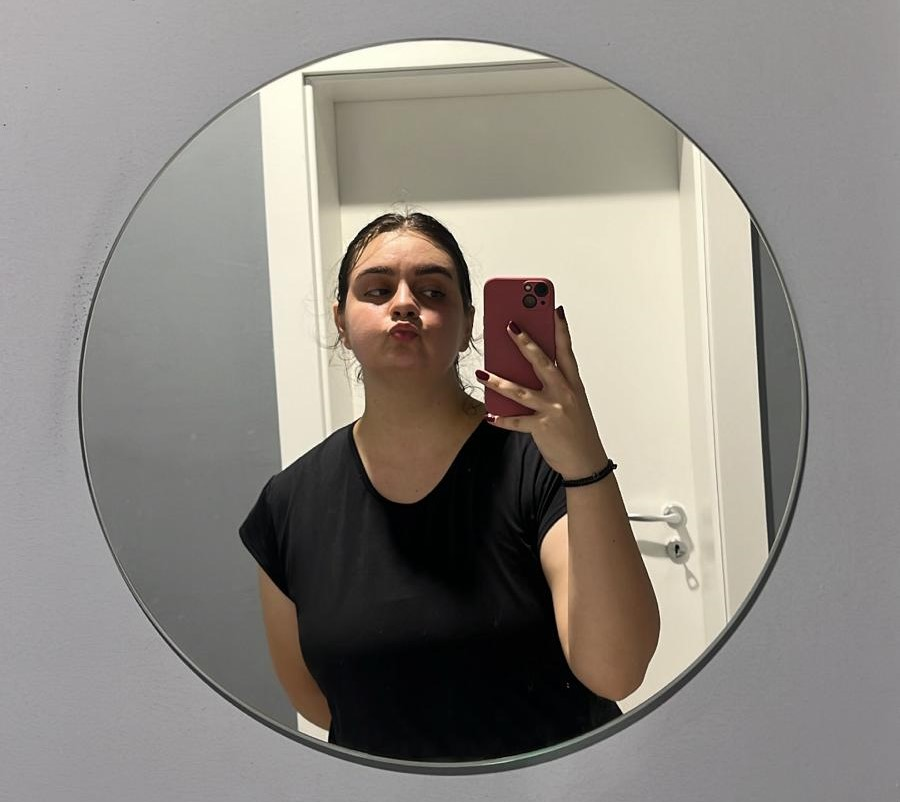

Silvia Apetrăriței

Rezumat
O tânără pasionată de tehnologie și programare, cu o educație solidă în domeniu și abilități în dezvoltarea web, dornic să contribuie la proiecte captivante și să își aducă aportul la progresul organizației.
Educație
- Liceul Tehnologic "Ion Crangă" Curtici (2016-2020)
- Facultatea de Inginerie, Specializarea Automatică și Informatică Aplicată-Universitatea "Aurel Vlaicu" Arad (2021-Prezent)
Experiență de muncă
Muncitor necalificat - Termostampi Rom
Junie 2018-Iulie 2018
Tehnician Transporturi - Rail Cargo Carrier Romania
Septembrie 2021-Prezent
- Îndosarierea și arhivarea documentelor.
- Verificarea registrelor de prezență ale angajaților.
- Monitorizarea și înregistrarea cererilor de manevră.
Aptitudini
- Abilități tehnice
- Utilizarea Microfost Office
- Experiență solidă în utilizarea internetului și a instrumentelor online pentru cercetare
- Abilități de comunicare
- Abilități analitice și de rezolvare a problemelo
- Creativitate și inovare
- Abilități de învățare rapidă
Diplome si Certificate
- Diplona de absolvire a liceului
- Diploma de Bacalaureat
- Certificat de competenta lingvistica in limba romana
- Certificat de competenta lingvistica in limba engleza
- Certificat de calificare nivel 4-Tehnician in activitati economice
- Certificat de competente digitale
Alte